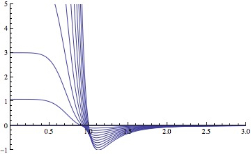
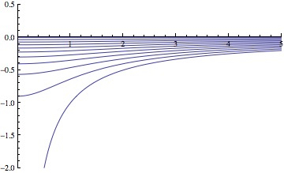

\(\renewcommand{\AA}{\text{Å}}\)
pair_style lj/cut/soft command
Accelerator Variants: lj/cut/soft/omp
pair_style lj/cut/soft/gapsys command
pair_style lj/cut/coul/cut/soft command
Accelerator Variants: lj/cut/coul/cut/soft/gpu, lj/cut/coul/cut/soft/omp
pair_style lj/cut/coul/long/soft command
Accelerator Variants: lj/cut/coul/long/soft/gpu, lj/cut/coul/long/soft/omp
pair_style lj/cut/tip4p/long/soft command
Accelerator Variants: lj/cut/tip4p/long/soft/omp
pair_style lj/charmm/coul/long/soft command
Accelerator Variants: lj/charmm/coul/long/soft/omp
pair_style lj/class2/soft command
Accelerator Variants: lj/class2/soft/omp
pair_style lj/class2/coul/cut/soft command
Accelerator Variants: lj/class2/coul/cut/soft/omp
pair_style lj/class2/coul/long/soft command
Accelerator Variants: lj/class2/coul/long/soft/omp
pair_style coul/cut/soft command
Accelerator Variants: coul/cut/soft/omp
pair_style coul/cut/soft/gapsys command
Accelerator Variants: coul/cut/soft/gapsys/omp
pair_style coul/long/soft command
Accelerator Variants: coul/long/soft/omp
pair_style tip4p/long/soft command
Accelerator Variants: tip4p/long/soft/omp
pair_style morse/soft command
Accelerator Variants: morse/soft/omp
Syntax
pair_style style args
style = lj/cut/soft or lj/cut/soft/gapsys or lj/cut/coul/cut/soft or lj/cut/coul/long/soft or lj/cut/tip4p/long/soft or lj/charmm/coul/long/soft or lj/class2/soft or lj/class2/coul/cut/soft or lj/class2/coul/long/soft or coul/cut/soft or coul/cut/soft/gapsys or coul/long/soft or tip4p/long/soft or morse/soft
args = list of arguments for a particular style
lj/cut/soft args = n alpha_lj cutoff n, alpha_LJ = parameters of soft-core potential cutoff = global cutoff for Lennard-Jones interactions (distance units) lj/cut/soft/gapsys args = alpha_lj cutoff alpha_LJ = parameters of soft-core potential cutoff = global cutoff for Lennard-Jones interactions (distance units) lj/cut/coul/cut/soft args = n alpha_LJ alpha_C cutoff (cutoff2) n, alpha_LJ, alpha_C = parameters of soft-core potential cutoff = global cutoff for LJ (and Coulombic if only 1 arg) (distance units) cutoff2 = global cutoff for Coulombic (optional) (distance units) lj/cut/coul/long/soft args = n alpha_LJ alpha_C cutoff n, alpha_LJ, alpha_C = parameters of the soft-core potential cutoff = global cutoff for LJ (and Coulombic if only 1 arg) (distance units) cutoff2 = global cutoff for Coulombic (optional) (distance units) lj/cut/tip4p/long/soft args = otype htype btype atype qdist n alpha_LJ alpha_C cutoff (cutoff2) otype,htype = atom types (numeric or type label) for TIP4P O and H btype,atype = bond and angle types (numeric or type label) for TIP4P waters qdist = distance from O atom to massless charge (distance units) n, alpha_LJ, alpha_C = parameters of the soft-core potential cutoff = global cutoff for LJ (and Coulombic if only 1 arg) (distance units) cutoff2 = global cutoff for Coulombic (optional) (distance units) lj/charmm/coul/long/soft args = n alpha_LJ alpha_C inner outer (cutoff) n, alpha_LJ, alpha_C = parameters of the soft-core potential inner, outer = global switching cutoffs for LJ (and Coulombic if only 5 args) cutoff = global cutoff for Coulombic (optional, outer is Coulombic cutoff if only 5 args) lj/class2/soft args = n alpha_lj cutoff n, alpha_LJ = parameters of soft-core potential cutoff = global cutoff for Lennard-Jones interactions (distance units) lj/class2/coul/cut/soft args = n alpha_LJ alpha_C cutoff (cutoff2) n, alpha_LJ, alpha_C = parameters of soft-core potential cutoff = global cutoff for LJ (and Coulombic if only 1 arg) (distance units) cutoff2 = global cutoff for Coulombic (optional) (distance units) lj/class2/coul/long/soft args = n alpha_LJ alpha_C cutoff (cutoff2) n, alpha_LJ, alpha_C = parameters of soft-core potential cutoff = global cutoff for LJ (and Coulombic if only 1 arg) (distance units) cutoff2 = global cutoff for Coulombic (optional) (distance units) coul/cut/soft args = n alpha_C cutoff n, alpha_C = parameters of the soft-core potential cutoff = global cutoff for Coulomb interactions (distance units) coul/cut/soft/gapsys args = sigma_q alpha_q cutoff sigma_q, alpha_q = parameters of the soft-core potential cutoff = global cutoff for Coulomb interactions (distance units) coul/long/soft args = n alpha_C cutoff n, alpha_C = parameters of the soft-core potential cutoff = global cutoff for Coulomb interactions (distance units) tip4p/long/soft args = otype htype btype atype qdist n alpha_C cutoff otype,htype = atom types (numeric or type label) for TIP4P O and H btype,atype = bond and angle types (numeric or type label) for TIP4P waters qdist = distance from O atom to massless charge (distance units) n, alpha_C = parameters of the soft-core potential cutoff = global cutoff for Coulomb interactions (distance units) morse/soft args = n lf cutoff n = soft-core parameter lf = transformation range is lf < lambda < 1 cutoff = global cutoff for Morse interactions (distance units)
Examples
pair_style lj/cut/soft 2.0 0.5 9.5
pair_coeff * * 0.28 3.1 1.0
pair_coeff 1 1 0.28 3.1 1.0 9.5
pair_style lj/cut/soft/gapsys 1.0 9.5
pair_coeff * * 0.28 3.1 1.0
pair_style lj/cut/coul/cut/soft 2.0 0.5 10.0 9.5
pair_style lj/cut/coul/cut/soft 2.0 0.5 10.0 9.5 9.5
pair_coeff * * 0.28 3.1 1.0
pair_coeff 1 1 0.28 3.1 0.5 10.0
pair_coeff 1 1 0.28 3.1 0.5 10.0 9.5
pair_style lj/cut/coul/long/soft 2.0 0.5 10.0 9.5
pair_style lj/cut/coul/long/soft 2.0 0.5 10.0 9.5 9.5
pair_coeff * * 0.28 3.1 1.0
pair_coeff 1 1 0.28 3.1 0.0 10.0
pair_coeff 1 1 0.28 3.1 0.0 10.0 9.5
pair_style lj/cut/tip4p/long/soft 1 2 7 8 0.15 2.0 0.5 10.0 9.8
pair_style lj/cut/tip4p/long/soft 1 2 7 8 0.15 2.0 0.5 10.0 9.8 9.5
pair_coeff * * 0.155 3.1536 1.0
pair_coeff 1 1 0.155 3.1536 1.0 9.5
pair_style lj/cut/tip4p/long/soft OW HW HW-OW HW-OW-HW 0.15 2.0 0.5 10.0 9.8
labelmap atom 1 OW 2 HW
labelmap bond 1 HW-OW
labelmap angle 1 HW-OW-HW
pair_coeff * * 0.155 3.1536 1.0
pair_coeff OW OW 0.155 3.1536 1.0 9.5
pair_style lj/charmm/coul/long 2.0 0.5 10.0 8.0 10.0
pair_style lj/charmm/coul/long 2.0 0.5 10.0 8.0 10.0 9.0
pair_coeff * * 0.28 3.1 1.0
pair_coeff 1 1 0.28 3.1 1.0 0.14 3.1
pair_style lj/class2/coul/long/soft 2.0 0.5 10.0 9.5
pair_style lj/class2/coul/long/soft 2.0 0.5 10.0 9.5 9.5
pair_coeff * * 0.28 3.1 1.0
pair_coeff 1 1 0.28 3.1 0.0 10.0
pair_coeff 1 1 0.28 3.1 0.0 10.0 9.5
pair_style coul/cut/soft/gapsys 1.0 2.0 9.5
pair_coeff * * 1.0
pair_style coul/long/soft 1.0 10.0 9.5
pair_coeff * * 1.0
pair_coeff 1 1 1.0
pair_style tip4p/long/soft 1 2 7 8 0.15 2.0 0.5 10.0 9.8
pair_coeff * * 1.0
pair_coeff 1 1 1.0
pair_style morse/soft 4 0.9 10.0
pair_coeff * * 100.0 2.0 1.5 1.0
pair_coeff 1 1 100.0 2.0 1.5 1.0 3.0
Example input scripts available: examples/PACKAGES/fep
Description
These pair styles have a soft repulsive core, tunable by a parameter lambda, in order to avoid singularities during free energy calculations when sites are created or annihilated (Beutler). When lambda tends to 0 the pair interaction vanishes with a soft repulsive core. When lambda tends to 1, the pair interaction approaches the normal, non-soft potential. These pair styles are suited for “alchemical” free energy calculations using the fix adapt/fep and compute fep commands.
The lj/cut/soft style and related sub-styles compute the 12-6 Lennard-Jones and Coulomb potentials modified by a soft core, with the functional form
The lj/class2/soft style is a 9-6 potential with the exponent of the denominator of the first term in brackets taking the value 1.5 instead of 2 (other details differ, see the form of the potential in pair_style lj/class2).
Coulomb interactions can also be damped with a soft core at short distance,
In the Coulomb part \(C\) is an energy-conversion constant, \(q_i\) and \(q_j\) are the charges on the two atoms, and epsilon is the dielectric constant which can be set by the dielectric command.
The coefficient lambda is an activation parameter. When \(\lambda = 1\) the pair potential is identical to a Lennard-Jones term or a Coulomb term or a combination of both. When \(\lambda = 0\) the interactions are deactivated. The transition between these two extrema is smoothed by a soft repulsive core in order to avoid singularities in potential energy and forces when sites are created or annihilated and can overlap (Beutler).
The parameters \(n\), \(\alpha_\mathrm{LJ}\) and \(\alpha_\mathrm{C}\) are set in the pair_style command, before the cutoffs. Usual choices for the exponent are \(n = 2\) or \(n = 1\). For the remaining coefficients \(\alpha_\mathrm{LJ} = 0.5\) and \(\alpha_\mathrm{C} = 10~\text{A}^2\) are appropriate choices. Plots of the 12-6 LJ and Coulomb terms are shown below, for lambda ranging from 1 to 0 every 0.1.


For the lj/cut/coul/cut/soft or lj/cut/coul/long/soft pair styles, as well as for the equivalent class2 versions, the following coefficients must be defined for each pair of atoms types via the pair_coeff command as in the examples above, or in the data file or restart files read by the read_data or read_restart commands, or by mixing as described below:
\(\epsilon\) (energy units)
\(\sigma\) (distance units)
\(\lambda\) (activation parameter, between 0 and 1)
cutoff1 (distance units)
cutoff2 (distance units)
The latter two coefficients are optional. If not specified, the global LJ and Coulombic cutoffs specified in the pair_style command are used. If only one cutoff is specified, it is used as the cutoff for both LJ and Coulombic interactions for this type pair. If both coefficients are specified, they are used as the LJ and Coulombic cutoffs for this type pair. You cannot specify 2 cutoffs for style lj/cut/soft, since it has no Coulombic terms. For the coul/cut/soft and coul/long/soft only lambda and the optional cutoff2 are to be specified.
Style lj/cut/tip4p/long/soft implements a soft-core version of the TIP4P water model. The usage of the TIP4P pair style is documented in the pair_lj styles. In the soft version the parameters \(n\), \(\alpha_\mathrm{LJ}\) and \(\alpha_\mathrm {C}\) are set in the pair_style command, after the specific parameters of the TIP4P water model and before the cutoffs. The activation parameter lambda is supplied as an argument of the pair_coeff command, after epsilon and sigma and before the optional cutoffs.
Note
If using type labels, the type labels must be defined before calling the pair_coeff command.
Style lj/charmm/coul/long/soft implements a soft-core version of the modified 12-6 LJ potential used in CHARMM and documented in the pair_style lj/charmm/coul/long style. In the soft version the parameters \(n\), \(\alpha_\mathrm{LJ}\) and \(\alpha_\mathrm{C}\) are set in the pair_style command, before the global cutoffs. The activation parameter lambda is introduced as an argument of the pair_coeff command, after \(\epsilon\) and \(\sigma\) and before the optional eps14 and sigma14.
Style lj/class2/soft implements a soft-core version of the 9-6 potential in pair_style lj/class2. In the soft version the parameters \(n\), \(\alpha_\mathrm{LJ}\) and \(\alpha_\mathrm{C}\) are set in the pair_style command, before the global cutoffs. The activation parameter lambda is introduced as an argument of the the pair_coeff command, after \(\epsilon\) and \(\sigma\) and before the optional cutoffs.
The coul/cut/soft, coul/long/soft and tip4p/long/soft sub-styles are designed to be combined with other pair potentials via the pair_style hybrid/overlay command. This is because they have no repulsive core. Hence, if used by themselves, there will be no repulsion to keep two oppositely charged particles from overlapping each other. In this case, if \(\lambda = 1\), a singularity may occur. These sub-styles are suitable to represent charges embedded in the Lennard-Jones radius of another site (for example hydrogen atoms in several water models). The \(\lambda\) must be defined for each pair, and coul/cut/soft can accept an optional cutoff as the second coefficient.
Note
When using the soft-core Coulomb potentials with long-range solvers (coul/long/soft, lj/cut/coul/long/soft, etc.) in a free energy calculation in which sites holding electrostatic charges are being created or annihilated (using fix adapt/fep and compute fep) it is important to adapt both the \(\lambda\) activation parameter (from 0 to 1, or the reverse) and the value of the charge (from 0 to its final value, or the reverse). This ensures that long-range electrostatic terms (kspace) are correct. It is not necessary to use soft-core Coulomb potentials if the van der Waals site is present during the free-energy route, thus avoiding overlap of the charges. Examples are provided in the LAMMPS source directory tree, under examples/PACKAGES/fep.
Note
To avoid division by zero do not set \(\sigma = 0\) in the lj/cut/soft and related styles; use the lambda parameter instead to activate/deactivate interactions, or use \(\epsilon = 0\) and \(\sigma = 1\). Alternatively, when sites do not interact though the Lennard-Jones term the coul/long/soft or similar sub-style can be used via the pair_style hybrid/overlay command.
The morse/soft variant modifies the pair_morse style at short range to have a soft core. The functional form differs from that of the lj/soft styles, and is instead given by:
The morse/soft style requires the following pair coefficients:
\(D_0\) (energy units)
\(\alpha\) (1/distance units)
\(r_0\) (distance units)
\(\lambda\) (unitless, between 0.0 and 1.0)
cutoff (distance units)
The last coefficient is optional. If not specified, the global morse cutoff is used.
Added in version 4Jul2026.
The pair style coul/cut/soft/gapsys implements the pair potential for Coulombic interactions which was proposed by Gapsys et al (Gapsys). The main idea behind this potential is the definition of a distance \(r_{inner}\), which is smaller than the cutoff distance \(r_c\): for distances shorter than \(r_{inner}\) the forces are computed based on a linearized expression while for distances larger than \(r_{inner}\) the forces are computed based on the standard Coulombic potential. The linearized expression ensures continuity of forces as well as of the first derivative of the forces.
The distance \(r_{inner}\) is given by
where \(q_i\) and \(q_j\) are the charges on the two atoms. For \(\lambda = 0\), \(r_{inner} = 0\), which implies that the standard Coulombic potential is employed for all distances.
For distances larger than \(r_{inner}\), the energy is computed by
where \(C\) is an energy-conversion constant, and epsilon is the dielectric constant which can be set by the dielectric command.
For distances shorter than \(r_{inner}\), the energy is computed by
This pair style requires the following pair coefficients:
\(\sigma_q\) (inverse squared charge units, positive real number)
\(\alpha_q\) (distance units, positive real number)
\(\lambda\) (unitless, between 0.0 and 1.0)
cutoff (distance units)
The recommended values for \(\sigma_q\) and \(\alpha_q\) are 1.0 and 0.3 \(r_c\) respectively.
Added in version 4Jul2026.
Similarly, the pair style lj/cut/soft/gapsys implements the pair potential for Lennard-Jones interactions which was proposed by Gapsys et al (Gapsys).
The distance \(r_{inner}\) is given by
where \(\sigma\) is the standard Lennard-Jones parameter. For \(\lambda = 0\), \(r_{inner} = 0\), which implies that the standard Lennard-Jones potential is employed for all distances.
For distances larger than \(r_{inner}\), the energy is computed by
\(r_c\) is the cutoff.
For distances shorter than \(r_{inner}\), the energy is computed by
This pair style requires the following pair coefficients:
\(\alpha_lj\) (distance units, positive real number)
\(\lambda\) (unitless, between 0.0 and 1.0)
cutoff (distance units)
Styles with a gpu, intel, kk, omp, or opt suffix are functionally the same as the corresponding style without the suffix. They have been optimized to run faster, depending on your available hardware, as discussed on the Accelerator packages page. The accelerated styles take the same arguments and should produce the same results, except for round-off and precision issues.
These accelerated styles are part of the GPU, INTEL, KOKKOS, OPENMP, and OPT packages, respectively. They are only enabled if LAMMPS was built with those packages. See the Build package page for more info.
You can specify the accelerated styles explicitly in your input script by including their suffix, or you can use the -suffix command-line switch when you invoke LAMMPS, or you can use the suffix command in your input script.
See the Accelerator packages page for more instructions on how to use the accelerated styles effectively.
Mixing, shift, table, tail correction, restart, rRESPA info
The different versions of the lj/cut/soft pair styles support mixing. For atom type pairs I,J and I != J, the \(\epsilon\) and \(\sigma\) coefficients and cutoff distance for these pair styles can be mixed. The default mix value is geometric for 12-6 styles.
The mixing rule for epsilon and sigma for lj/class2/soft 9-6 potentials is to use the sixthpower formulas. The pair_modify mix setting is thus ignored for class2 potentials for \(\epsilon\) and \(\sigma\). However it is still followed for mixing the cutoff distance. See the pair_modify command for details.
The morse/soft pair style does not support mixing. Thus, coefficients for all LJ pairs must be specified explicitly.
All of the pair styles with soft core support the pair_modify shift option for the energy of the Lennard-Jones portion of the pair interaction.
The different versions of the lj/cut/soft pair styles support the pair_modify tail option for adding a long-range tail correction to the energy and pressure for the Lennard-Jones portion of the pair interaction.
Note
The analytical form of the tail corrections for energy and pressure used in the lj/cut/soft potentials are approximate, being identical to that of the corresponding non-soft potentials scaled by a factor \(\lambda^n\). The errors due to this approximation should be negligible. For example, for a cutoff of \(2.5\sigma\) this approximation leads to maximum relative errors in tail corrections of the order of 1e-4 for energy and virial (\(\alpha_\mathrm{LJ} = 0.5, n = 2\)). The error vanishes when lambda approaches 0 or 1. Note that these are the errors affecting the long-range tail (itself a correction to the interaction energy) which includes other approximations, namely that the system is homogeneous (local density equal the average density) beyond the cutoff.
The morse/soft pair style does not support the pair_modify tail option for adding long-range tail corrections to energy and pressure.
All of these pair styles write information to binary restart files, so pair_style and pair_coeff commands do not need to be specified in an input script that reads a restart file.
Restrictions
The pair styles with soft core are only enabled if LAMMPS was built with the FEP package. The long versions also require the KSPACE package to be installed. The soft tip4p versions also require the MOLECULE package to be installed. These styles are only enabled if LAMMPS was built with those packages. See the Build package page for more info.
Default
none
(Beutler) Beutler, Mark, van Schaik, Gerber, van Gunsteren, Chem Phys Lett, 222, 529 (1994).
(Gapsys) Gapsys, Seeliger, de Groot, J Chem Theor Comput, 8, 2373 (2012).